July Hackathon 2026 · Track A — Crisis Tech · solo entry
বর্ণমালা · Bornomala
Texting in Bangla costs twice as much as texting in English — same phone,
same tower. In a blackout that is the difference between a message getting out and not.
Broadband went dark too. What kept working was the oldest part of the phone network:
voice calls and text messages. People fell back to texting.
Every crisis tool assumes it can build a new network. In July, nobody could.
And texting in Bangla costs twice as much.
Text messages were built around an old character set that only covers English. Write one
Bangla letter and the whole message switches to a heavier format:
160characters per segment, English
70characters per segment, Bangla
2.3×more expensive, per message
Worse than the price: a long message is split into pieces, and it arrives only if
every piece does. Lose one on a jammed tower and the whole report is gone. A message
small enough to fit in one piece has nothing to lose.
02 — why not just a Bluetooth mesh app?
A mesh reaches the room. A text reaches your mother.
Half of crisis tech is offline mesh messengers — Bluetooth or Wi-Fi passing messages
phone to phone. Good idea, three conditions attached:
Bluetooth mesh app
Bornomala
Who needs the app
both people, installed before the disaster
only the sender
How far it reaches
about 100 metres
the whole country
Who it can reach
strangers nearby who also installed it
any phone that can receive a text
Can it call 999
no
yes, one tap
So Bornomala does not build a network. It uses the one that already
reaches everybody — text messages and voice calls — and makes it cheaper.
03 — how the compression works
It guesses the next letter, so the letter costs less.
1A small Bangla model rides inside the app. No internet, no server.
2It predicts each next letter. Cost equals surprise — an expected letter is nearly free to record; only surprises cost.
3The bits go out as characters SMS treats as cheap.
আমরা পাঁচজন নিরাপদ আছি, ঢাকা
Bù8P9*+=!¤1+1j
731 characters → 3 texts, not 11
731 Bangla characters: 3 texts, not 11.
04 — tab one: Normal
Type Bangla. Send it. Read it back.
→Send opens your own SMS app, number and message filled in.
→It stays off until a real number is there — a text link with no number silently fails.
←Paste the whole message you received. It finds the code, ignores the signature and the map link.
⇥Anything shared into the app from elsewhere lands in the decode box.
Try it: 01315267528
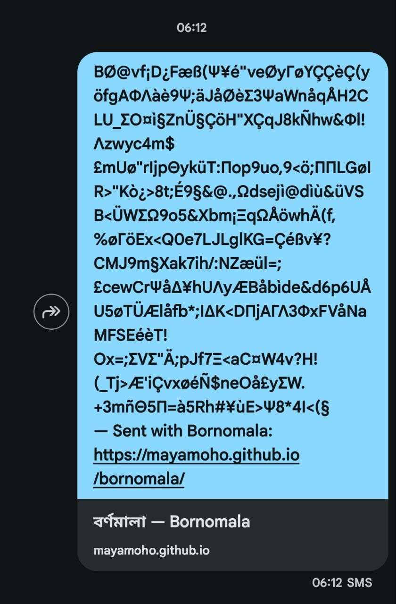
How it lands on the other phone.
05 — tab two: Emergency
A survivor has no app. So this tab sends words.
✍What is happening, in your own words.
☑One of 32 ready sentences, with a blank to fill.
📍A district, or your live location.
⏱How long ago.
☎999 and eight more, one tap to call — these are call centres, so calling is the reliable path. Calls need no internet.
It refuses to send until those are answered — a report with no place is not a report.
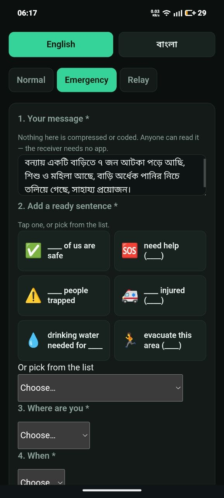
Typing the report.
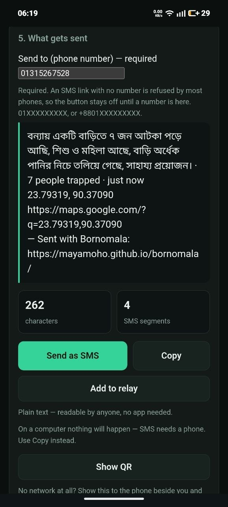
What actually gets sent — plain words.
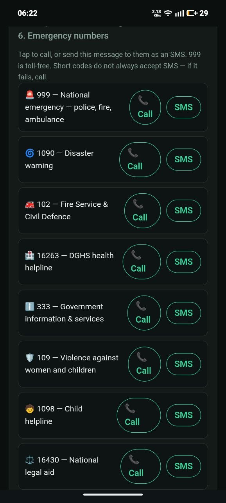
Nine national numbers.
06 — tab three: Relay
Forty families. One message.
+Each household is added with one tap from the Emergency tab.
=They go out together, with one signature for the batch.
△A counter shows what sending them one by one would have cost.
Two households → one message
Who it is for: a shelter volunteer or ward coordinator — one person
speaking for many. Not for your own single message; that is the Emergency tab. When towers
are jammed, one message that gets through beats forty in a queue.
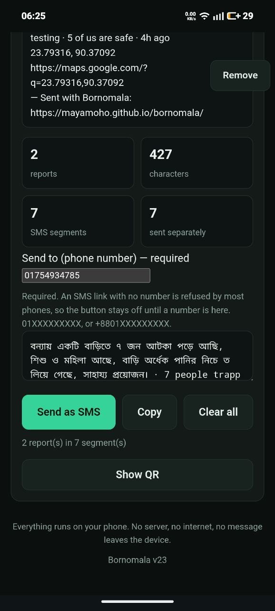
The queue, and what it costs.Both arriving as one SMS.
07 — measured, not claimed
5,000 messages the model had never seen.
Bangla in one text
Fits in one
Bornomala
361
100.0%
Every phone today
70
98.2%
gzip
53
99.5%
5.15× more Bangla per text
Ordinary compression does worse than doing nothing — it has no idea what Bangla
looks like, and a message this short never repays the overhead.
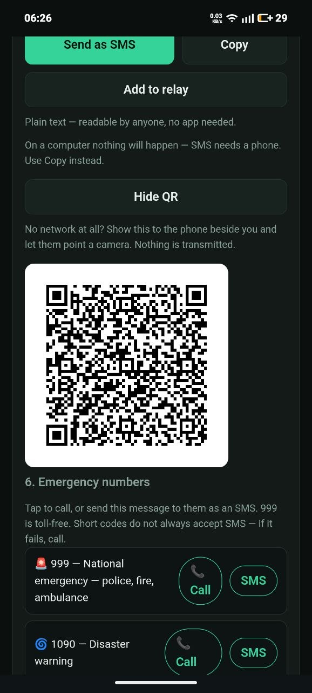
No network at all? The message becomes a QR.
08 — graceful degradation
Each layer below has a floor.
No internetinstall it once and it opens forever after, with no connection
No mobile datatexts and calls still go, over 2G
No GPSpick your district instead of using live location
No network at allshow the QR and let the phone beside you photograph it — for handing a report to a rescue team, or to someone walking out to coverage
Your location always travels twice — as a map link and as plain numbers beside it —
because the numbers still make sense on a phone that cannot open the link.
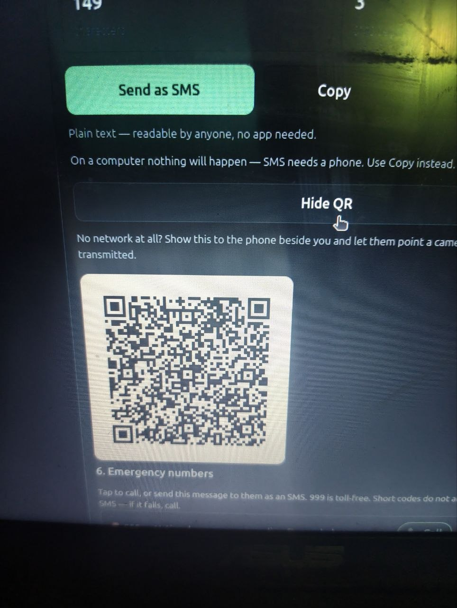
No network: screen to camera.
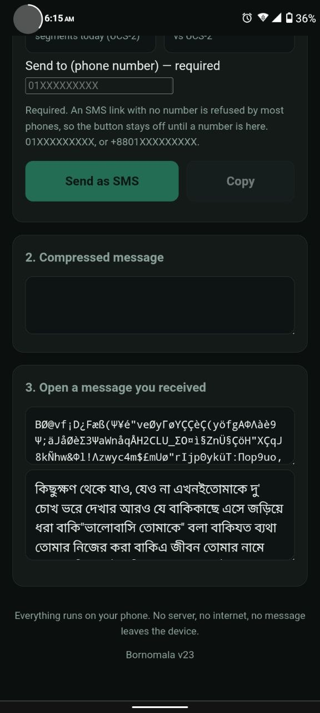
Compress and decode, side by side.
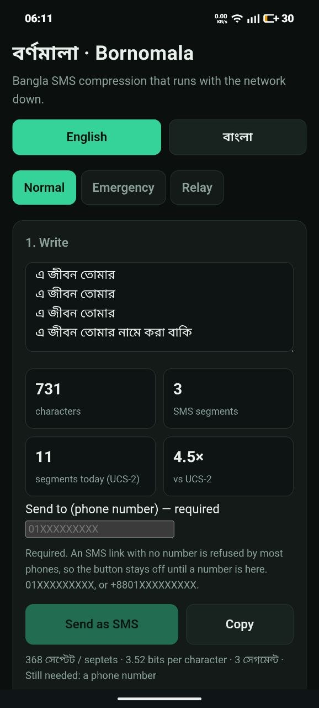
Send stays off without a number.
No accounts, no tracking, no ads, nothing sent to us. The app is 92 kB and the
model a separate 1.7 MB, so Emergency and Relay work before it finishes loading.
09 — running on real phones
Installed, sent, received — on two Android handsets.
Chrome's ⋮ menu.
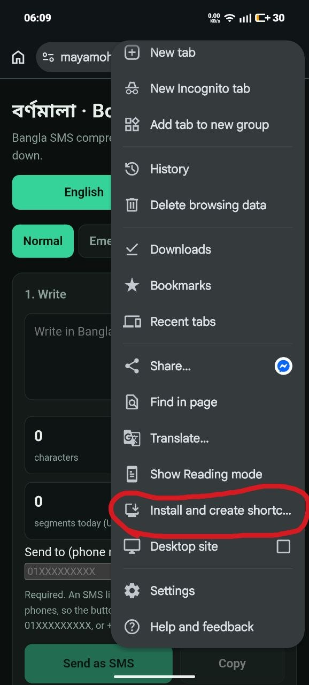
Install and create shortcut.
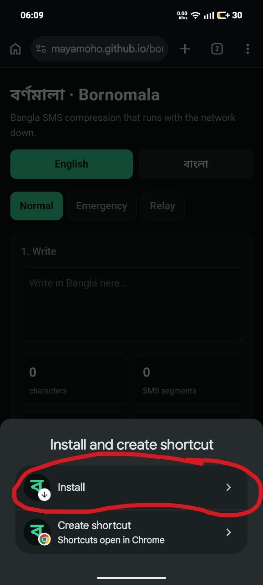
Confirm Install.
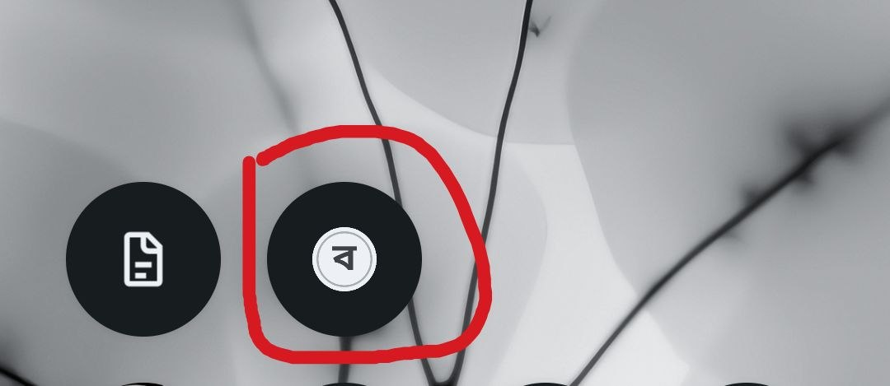
On the home screen.Typing the report.
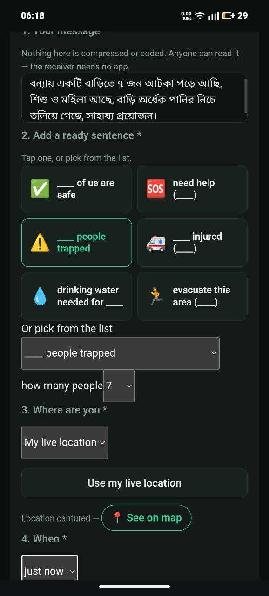
Live location captured.
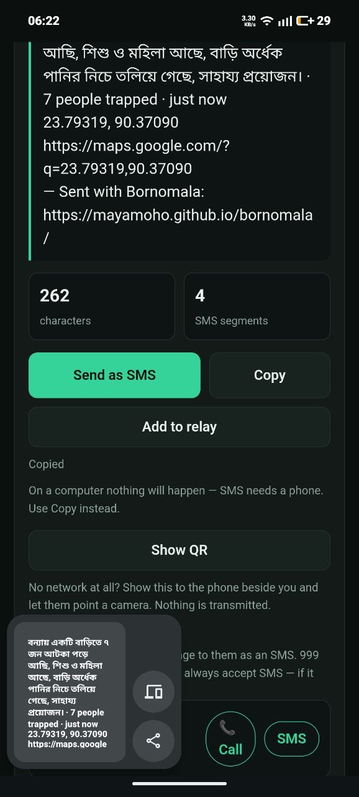
Copy and share out.
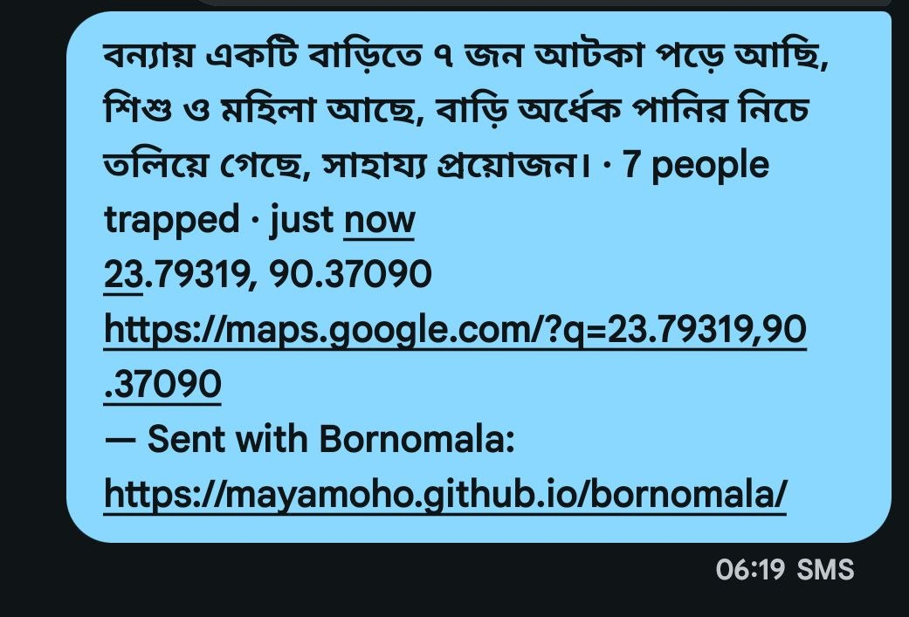
Arriving as plain words.
Live at mayamoho.github.io/bornomala · bilingual, switchable
mid-message · 81 automated checks across three suites · MIT licensed, with the benchmark and
the model training tools in the repo.